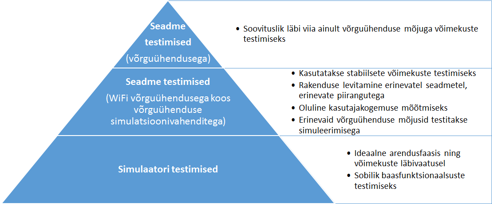

Eelpooltoodud väljakutsetele vastamiseks ning testimise eesmärgi saavutamiseks on mobiilivaldkonnas mitmeid erinevaid testimisstrateegiaid:
Strateegia |
Rakendatavus eID kontekstis |
Emuleerimine |
Simulatsiooni-testimist saab kasutada piiratud ulatuses (nutiseadmes või veebiteenuste vahendusel toimivate funktsionaalsuste testimine, mis ei vaja suhtlust väliste lisaseadmetega ega ID-kaardiga). |
Pilvetehnoloogia-testimine |
Pilvepõhised testimislahendusi on võimalik kasutada piiratud ulatuses (analoogselt emuleerimisega lisaseadmed/ID-kaart puuduvad). Üheks võimalikuks kasutusvaldkonnaks on UI testid (paljudel erinevatel seadmetel ja konfiguratsioonidega). |
Testimine füüsilistel seadmetel |
Tervikliku äriprotsessi testimiseks valdavalt ainuvõimalik lahend. Samas eeldab erinevate testimisseadmete olemasolu ja on seetõttu kulukas ja aeganõudev. |
Automatiseeritud testimine |
Rakendatav koosmõjus füüsilistel seadmetel testimisega testide automatiseerimise läbi kulude optimeerimiseks. |
Dokumendi lisas on toodud levinuimate testimisvahendite võrdlus (vt Lisa 9). Mobiiliplatvormil kasutatavad testimisvahendeid jagatakse järgmiselt:
Testimisstrateegia kindlustab testimiste läbiviimist nii simulatsioonidega kui ka reaalsete seadmete ja reaalsete võrgu-ühendustega. Kuna seademete (ja lisaseadmete) hulk ja valik on väga suur, ei ole majanduslikult mõistlik läbi viia testimisi kõikide erinevate kombinatsioonidega. Testimiste läbiviimisel leitakse tasakaalupunkt rakenduse võtmefaktorite ja testimise ulatuse vahel. Eksisteerivad DigiDoc mobiilirakendused on valdavalt läbinud manuaalsed suitsutestimised, mis kindlasti ei ole optimaalne ega piisav. Vajadus on katta erinevaid testimiseaspekte ning kulude optimeerimise mõttes liikuda järjest enam automaattestidele (unit, UI).
Testimisstrateegia on mõistlik üles ehitada järgmise astmelise strateegiana:

Joonis 6 . Testimisstrateegia püramiid
eID tarkvara laiendamisel mobiilsetele platvormidele tuleb arvestada ühelt poolt riigi poolt pakutava teenusega kui teisalt ka võimalikke lisaseadmeid (nt välised USB/Bluetooth ID-kaardi lugejad, NFC toega ID-kaardid jne).
Soovituslik eID süsteemi testimisstrateegia on kombinatsioon simulaatori-testimistest ja reaalsete seadmete peal testimisest, kus koosmõjuna automaattestidega üritatakse võimalikult palju tüüp-stsenaariume läbi testida automatiseerituna.